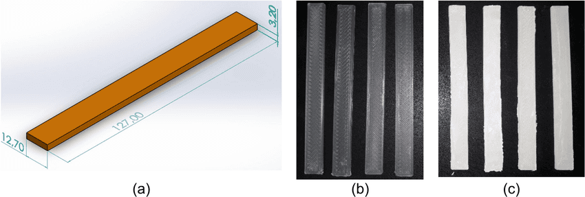
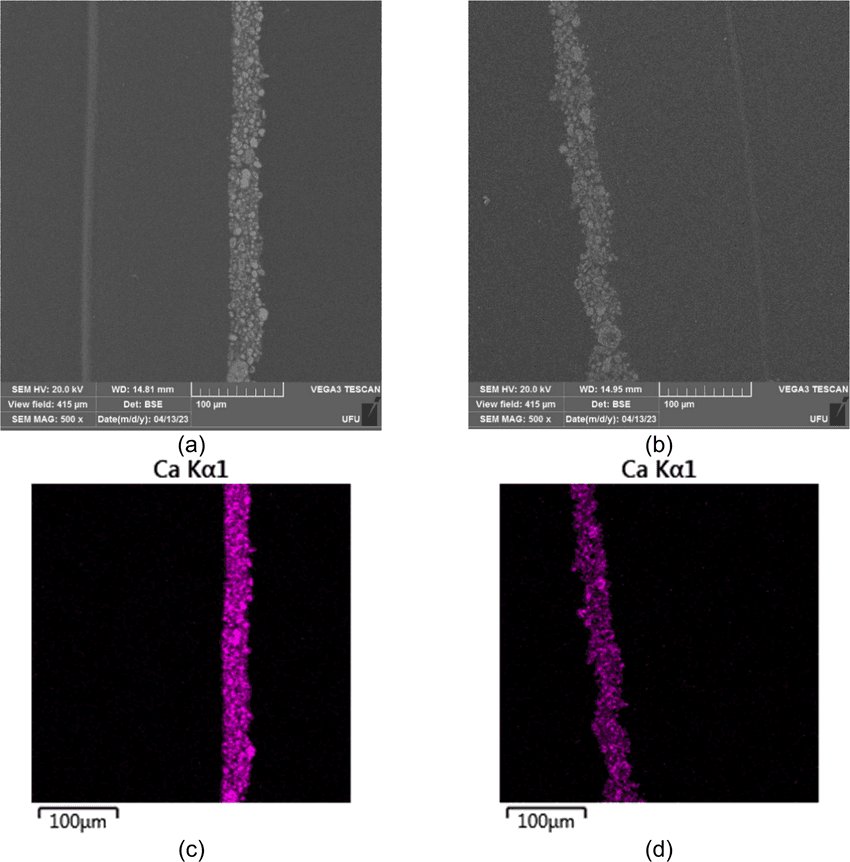
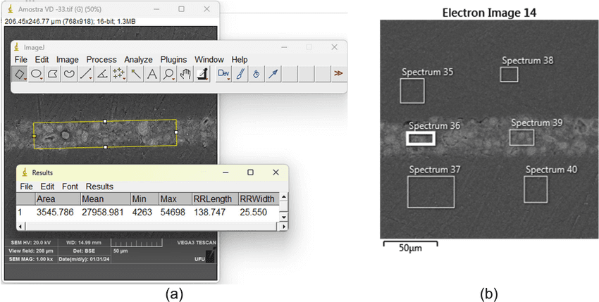
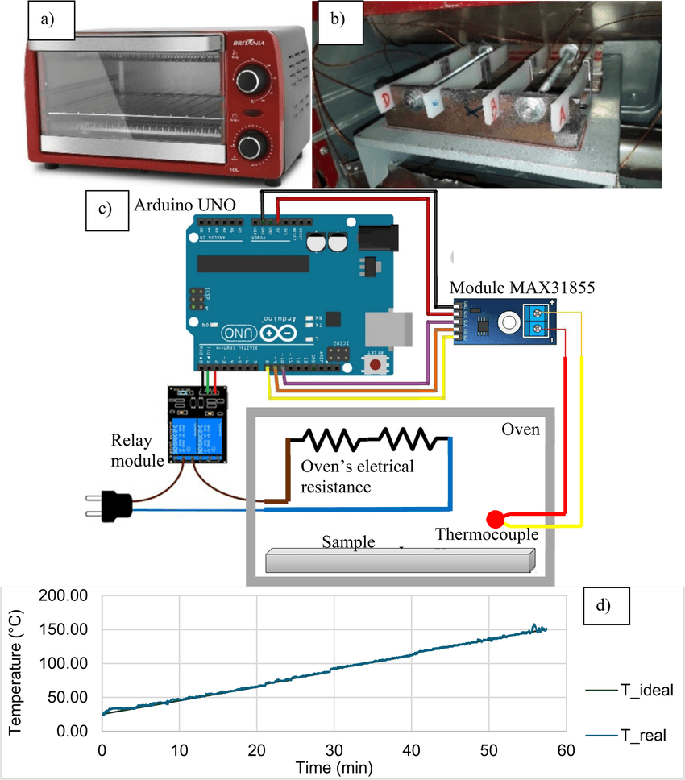
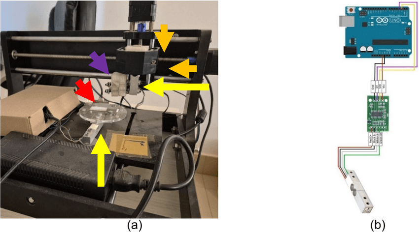

Biocompatible, sterilization-resistant 3D-printed PLA
Materials research · Federal University of Uberlândia
Project description
PLA is easy to 3D print, but ordinary printed parts soften at relatively low temperatures and can be difficult to coat reliably. This study investigated a single heat-treatment step that strengthens the printed polymer and adds a hydroxyapatite mineral surface, with potential for customized orthopedic implants.

Printing, heating, and coating in one process
Test specimens were 3D printed, buried in hydroxyapatite (HA) or HA/titanium dioxide powder, and heated at 170–190 °C. The powder bed supported the parts during annealing while mineral particles formed a coating on the surface. Different treatment and sterilization conditions were compared.

Looking inside the coating
Cross-sections were examined with electron microscopy to see how the mineral layer joined the PLA. Calcium maps helped locate hydroxyapatite within the surface region. The images and chemical analysis showed that HA particles penetrated into the polymer rather than simply resting on top.


The resulting coatings were approximately 20–50 μm thick and remained stable after sterilization, especially for samples annealed at 180 °C.
Checking resistance to heat and sterilization
The parts were tested under load while the temperature increased to find when they started to bend. An oven-based setup used a thermocouple and Arduino system to monitor and control heating. The study also compared autoclave cycles with different drying conditions.

Powder bed annealing increased heat deflection temperature from about 65 °C to at least 150 °C, enabling autoclave sterilization without deformation.
Testing how firmly the coating holds
A mini-CNC scratch-test setup moved an indenter across the coated surface as the load increased. The test checked when the layer began to detach. Bending and impact tests were also used to understand how the treated parts behaved mechanically.

Measured coating adhesion strengths ranged from 83 to 139 MPa. Samples treated at 180 °C showed the highest flexural strength, up to 37 MPa, while selected conditions gained more than 100% in impact resistance after sterilization.
What the study shows
One scalable treatment can combine mechanical reinforcement, thermal stabilization, and a mineral coating. The results suggest a promising manufacturing route for customized, sterilization-resistant PLA implants; they do not by themselves establish clinical suitability.
Published research
Adhesion, sterilization resistance and heat deflection temperature of 3D printed PLA parts coated with hydroxyapatite by powder bed annealing. The International Journal of Advanced Manufacturing Technology, 145(11–12), 8187–8206 · July 2026.
Read the journal articleFigures reproduced from the publication supplied by Kauã Almeida · CC BY 4.0 · Explanatory text simplified for this portfolio.